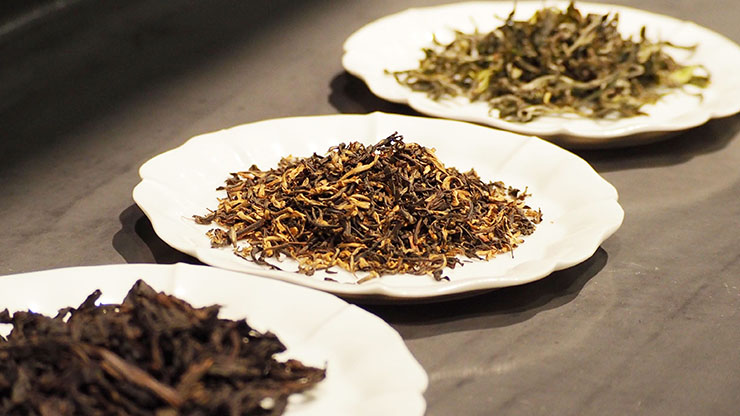
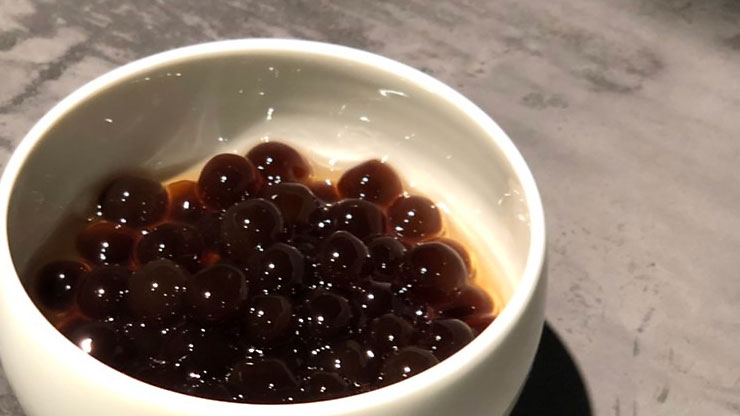

Scroll
SuutaChaiのこだわり
世界の産地から選りすぐった最高レベルの紅茶・日本茶・中国茶から、
日本屈指のティーマイスターが選定した厳選茶葉だけを使用。
かわいいだけじゃない、本格タピオカドリンク #suutachai をお楽しみください。
Point.1
厳選された茶葉
茶葉本来の香り・風味・味わいを最大限引き出すため、湯温、茶葉の量、抽出時間を茶葉ごとに管理し、丁寧に湯煎しています。
Point.2
無添加 生タピオカ
本場台湾から直輸入した無添加の生タピオカを使用。 常にモチモチの食感を提供する為、調理後３時間以内のタピオカのみを使用しております。
当店のメニュー
Customize Your Tea
カスタマイズメニュー
| タピオカ増量 | ＋¥50 |
| Lサイズ変更 | ＋¥100 |
 甘さ 甘さ |
甘め・普通・控えめ |
※表記の金額は全て税別です。
店舗案内
Address
群馬県高崎市連雀町12-1
アイディコート1階 A号
Open
12:00～20:00
Close
毎週月曜日
Contact